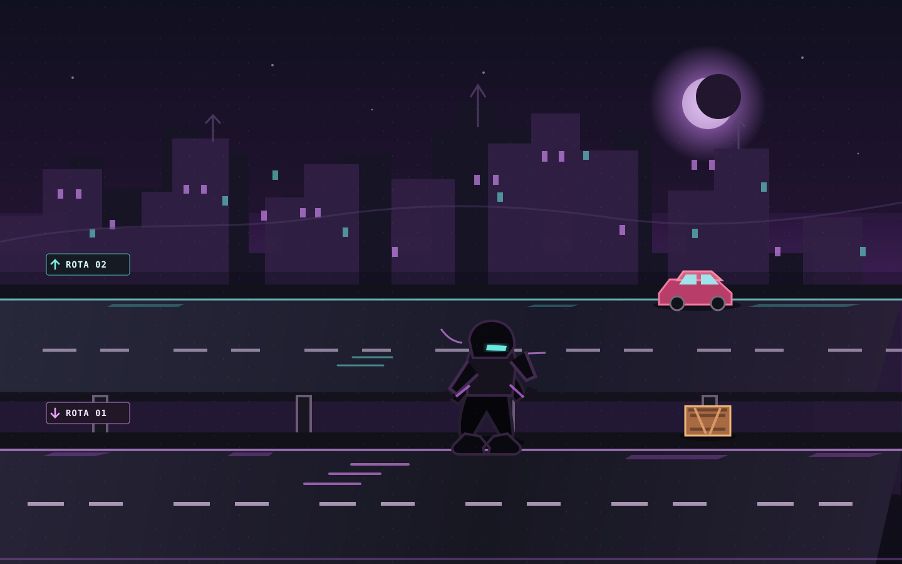

01 / ELEVE
Salte
Use o salto baixo para passar por perigos menores. Um segundo toque no alto ativa o salto alto.
PULO BAIXO · PULO ALTOENDLESS RUNNER · CIDADE NEON
Duas rotas. Uma sombra. Reaja aos perigos, escolha seu caminho e atravesse a noite.

CRASHIER é uma corrida urbana sem linha de chegada. Uma sombra atravessa bairros, rodovias e áreas verdes enquanto a cidade muda ao redor dela.
Leia o obstáculo, escolha entre duas rotas e acerte o movimento. Quanto mais longe você vai, mais rápido tudo acontece.
Veja o aviso. Escolha o movimento. Continue correndo.
Use o salto baixo para passar por perigos menores. Um segundo toque no alto ativa o salto alto.
PULO BAIXO · PULO ALTOBaixe o corpo e passe sob cercas, mesas e galhos que bloqueiam o caminho.
DESLIZEEncontre uma caixa de madeira e role no momento certo para quebrá-la e seguir em frente.
ROLAGEM · QUEBRAAs duas vias têm obstáculos próprios. Mude de faixa para encontrar outra passagem.
ROTA SUPERIOR · INFERIORPoças, cones, carros, caminhões e outros obstáculos aparecem conforme a cidade passa de um bairro para outro.
BAIRRO · RODOVIA · PARQUE · FLORESTAA arte do topo é uma ilustração original. As capturas reais do jogo serão adicionadas aqui.
Os quadros acima são espaços reservados, não imagens de gameplay.
Teclado, toque ou gesto. Os comandos estão disponíveis durante a corrida.
ABRIR O JOGODIÁRIO DE BORDO
Este é o canal para notas de versão, correções e novidades confirmadas do CRASHIER. Consulte as releases para ver o histórico publicado.